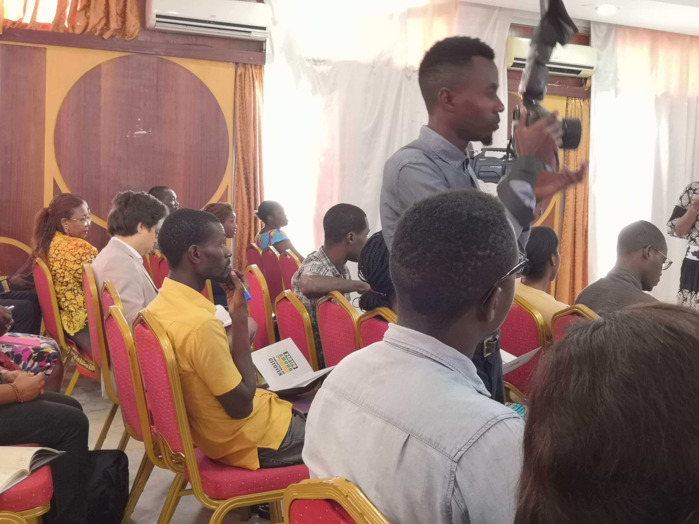
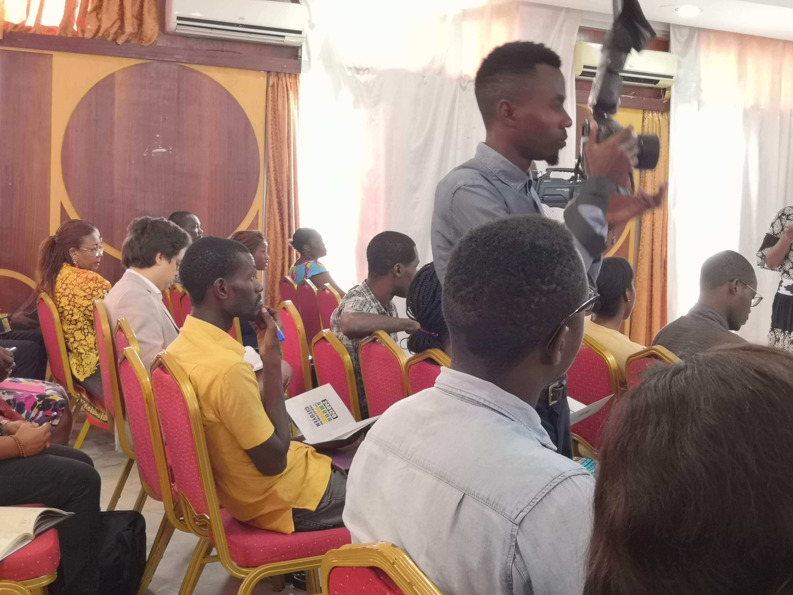

Youri-Mendoza IBABO-ISSOUDI
Développeur web et web mobile
Développeur web et web mobile
L'objectif de mon blog est de pouvoir non seulement permettre aux visiteurs d'entrer dans mon univers mais aussi de découvrir l'Ecole 241, nos différents activités, et ceux depuis le début des inscriptions en ligne jusqu'à la fin de l'année 2019-2020 (promo 2).

Dans cette partie, vous avez une vue d'ensemble à travers quelques images qui représentent les différentes événements qui m'ont marqué durant la réunion d'information organisé par l'Ecole 241 au Centre Culture Français (CCF).


Mes premières semaines de cours ont été également l'un des moments marquants après la phase de la prairie. Soulignant que mon intégration au sein de cette école a été rendu possible et rapide grâce à l'accueil chareuleureuse et conviviale qui a été faite aux nouveaux apprenants par l'ensemble des Coachs dont le fondateur (M. Sylvère BOUSSAMBA) et la directrice (Mme Sylvie Touré T'chandy).


La nouvelle année 2020 a été aussi marqué par un événement : l"anniversaire de Mme Ghislaine Laryssa BOUSSAMBA. Ci-dessous vous avez les images qui retracent parfaitement ce jours.


Initié il y'a 5 ans par L'Institut Français de Paris, la 2ème grande édition de la Nuit des idées a été également célèbré au Musée National du Gabon le 30 janvier 2020. À cela, notons que, comme avec la première édition en 2019, L'Ecole 241 a été fortement répresenté avec notamment l'ensemble des responsables de l'Ecole 241 et les apprenants de la promo 1 et 2.


Invité à cet événement, l'Ecole 241 a marqué sa presence avec notamment les apprenants de la deuxième promotion 2020.
 
